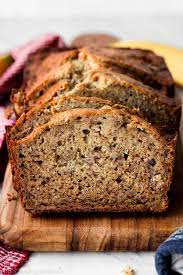

Banana Bread

Description
This is the best banana bread recipe. It is chunky hehe
Ingredients
- White Sugar - 1 cup
- Margarine, softened - 1/2 cup
- Eggs - 2x
- Mashed banana - 1 1/2 cups
- All purpose flour - 2 cups
- Baking soda - 1 teaspoon
Steps
- Preheat the oven to 350 degrees F (175 degrees C). Grease and flour a 9x5-inch loaf pan.
- Beat sugar and margarine in a bowl until smooth. Beat in eggs, then bananas. Add flour and baking soda, stirring just until combined. Pour into the prepared pan.
- Bake in the preheated oven until a toothpick in the center comes out clean, about 1 hour. Remove from the pan and let cool.
- Store in the refrigerator or freeze.